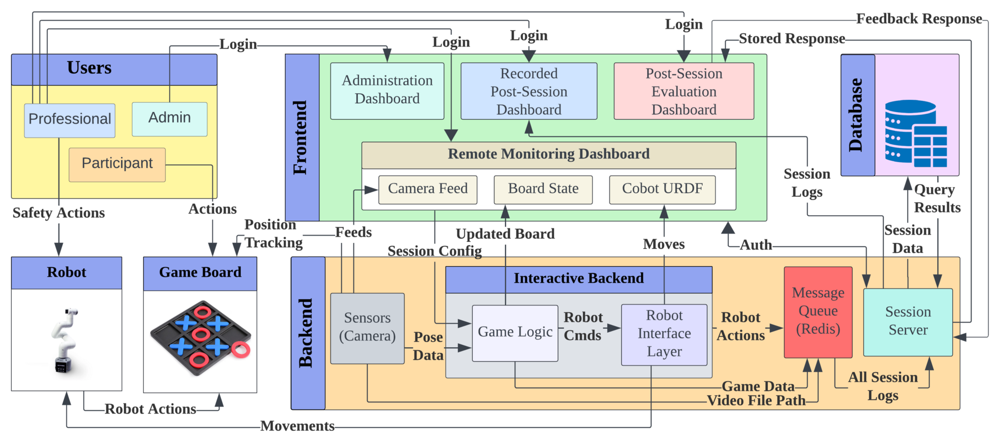
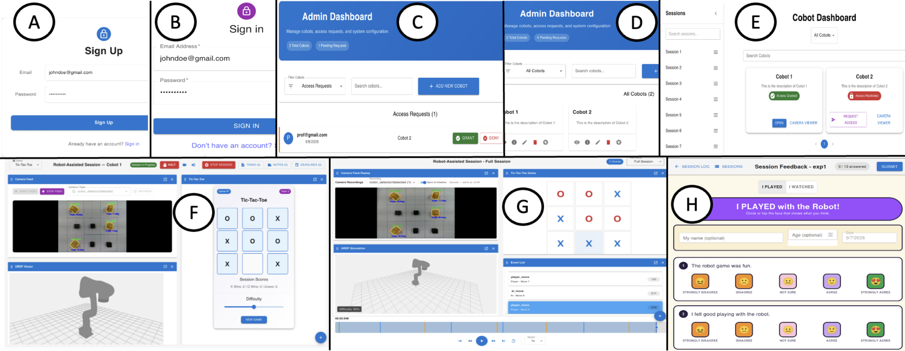
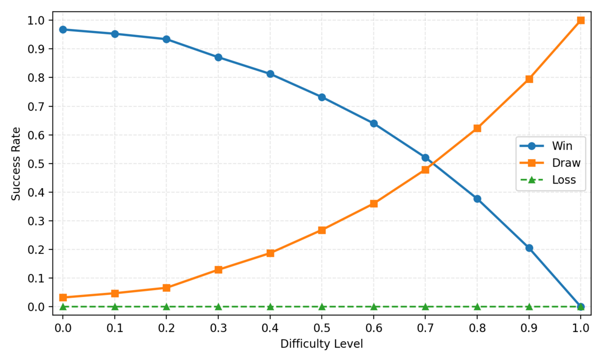
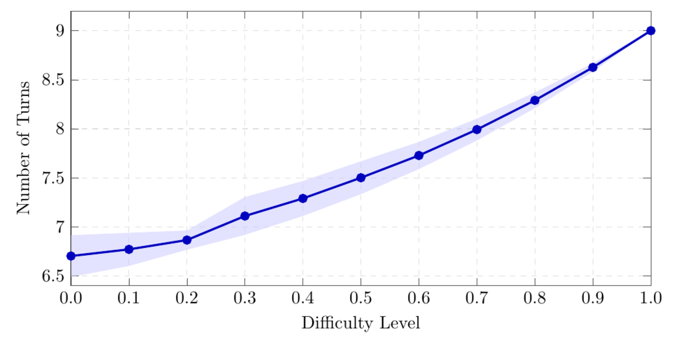
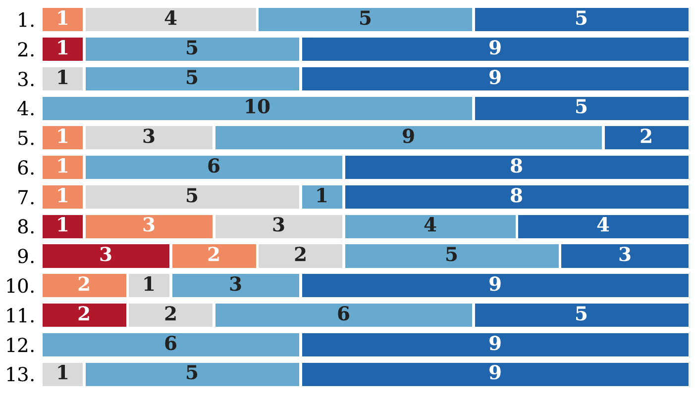

DIRT: Data-Integrated Robot Therapy for
Real-Time Gameplay Interaction, Supervision, and Multimodal
Session Management
A session-centered web system for robot-assisted therapy that unifies
non-intrusive supervision, game-based robot interaction, and
synchronized multimodal session capture.
A user interacting with DIRT, a platform for studying child–robot
social interaction through turn-based gameplay.
Overview
We present DIRT, a data-integrated system for
robot-assisted therapy that unifies supervision, gameplay
interaction, and multimodal session management within a single
session-centered architecture.
Unlike workflows that require clinicians to operate separate tools
for monitoring, gameplay interaction, and post-session review, DIRT
maintains a shared web session state across four integrated modules:
authenticated, role-based dashboards for non-intrusive supervision;
a game-based interaction framework coordinating voice guidance,
robot motion, and real-time game state; synchronized capture of
robot motion, robot vision, participant video, and game state; and a
post-session feedback module that collects structured feedback from
the participant after a session ends.
We evaluate system performance in a physics-based robotic simulator
and demonstrate the system in real-world gameplay sessions with
15 children ages 5 to 12, assessing its latency, multimodal data
capture and storage cost, and adaptive difficulty mechanism.
Four integrated modules
DIRT runs entirely in a web browser and can launch, monitor, and
record a session from any device on the local network — no
client-side installation or robotics expertise required.
1
Role-based supervision
Authenticated dashboards enforce least-privilege access for
administrators, professionals, and participants. A single
workspace consolidates live camera feeds, a URDF-based 3D robot
view, and the game board for non-intrusive observation.
2
Game-based interaction
A turn-based framework coordinates voice guidance, robot pick-and-place
motion, and real-time game state. A camera-based perception module
validates each participant move before the robot responds.
3
Synchronized multimodal data capture
Robot motion, robot vision, participant video, and game events are
captured automatically on a shared, time-synchronized pipeline —
kept off the interaction path so logging never delays turn-taking.
4
Post-session feedback
After a session ends, a structured questionnaire collects the
participant's impressions while the experience is still fresh,
linked to the session's objective multimodal record.
System architecture
DIRT follows a three-tier architecture — a frontend of role-scoped
dashboards, a backend computational core, and a database and
file-storage layer — designed for real-time robot-mediated sessions.

The DIRT three-tier architecture connecting the frontend
dashboards, backend interaction logic and robot control, and the
database and file-storage layer.

The DIRT web interface: authentication, administrator pages,
session management, the live session view, synchronized session-log
replay, and the post-session feedback questionnaire.
Videos
Recordings from simulated and real-world DIRT sessions. Press play on
any clip.
Dashboard + gameplay
Dashboard walkthrough with real gameplay
The dashboard from login through the session monitoring page,
shown side by side with a real-world gameplay session.
Dashboard + simulation
Dashboard with the CoppeliaSim scene
The dashboard from the session management page through the
session monitoring page, shown side by side with the
CoppeliaSim simulation scene.
Post-session review
Post-session review
Replaying a completed session — synchronized camera, robot
state, board updates, and the event timeline — together with the
post-session feedback questionnaire.
Results
~430x
faster joint-command retrieval vs. online IK over a full turn
16.56 MB
average data per session (96.7% video)
2.89 kB
structured session data — a queryable history at negligible cost
Robot motion planning and execution
Precomputed joint commands are retrieved from a database instead of
solving inverse kinematics online. Over a complete pick-and-place turn,
database retrieval is roughly 430x faster than the IKPy solver, with
constant latency, while adding negligible time against the physical
execution of the turn.
Planning latency and execution time for one pick-and-place turn
over 10 sessions (total 34 turns). Values are mean ± standard
deviation in seconds; each planning column carries its own
power-of-ten factor. Gripper actions are end-effector commands and
compute no joint angles.
Robot behavior
Planning time (s)
Robot exec. (s)
DIRT (x10⁻⁴ s)
IKPy (x10⁻¹ s)
Pickup
Move above piece
4.02 ± 13.04
1.63 ± 1.35
4.87 ± 0.31
Open gripper
—
—
0.30 ± 0.003
Descend to grip
1.52 ± 1.59
1.36 ± 0.88
1.69 ± 0.02
Close gripper
—
—
0.31 ± 0.006
Return above piece
2.29 ± 3.79
1.36 ± 0.99
1.69 ± 0.02
Place
Move above board cell
3.94 ± 12.13
1.35 ± 0.96
4.71 ± 0.93
Descend to drop
3.71 ± 10.61
1.23 ± 0.68
1.68 ± 0.02
Open gripper
—
—
0.30 ± 0.004
Return above board cell
4.26 ± 16.87
1.54 ± 1.31
1.69 ± 0.02
Complete turn
19.74 ± 58.03
8.47 ± 6.17
17.24 ± 1.33
Session data volume
A recorded session averages 16.56 MB. Participant video dominates the
footprint (96.7%), while the complete queryable relational record
occupies only 2.89 kB — so the queryable history of roughly 5,500
sessions fits in the space of one session's video.
Data volume averaged across 10 sessions.
Record
Count
Storage
Robot joint state (rosbag)
1,036.1 messages
272.8 kB
Joint states (derived NDJSON)
1 file
274.6 kB
Participant video @ 30 fps
2,938 frames
16.01 MB
Activity events
8 rows
1.4 kB
Activity instances
1 row
205 B
Media descriptors
2 rows
1.2 kB
Session metadata
1 row
80 B
Session total
—
16.56 MB
Adaptive difficulty
DIRT implements tic-tac-toe with a continuous difficulty parameter
d: at each turn the robot plays the optimal (minimax) move
with probability d and a random valid move otherwise. Across
a full difficulty sweep against an expert opponent, outcomes shift
predictably — from a 96.8% human win rate at d = 0.0
to entirely drawn games at d = 1.0.

Game outcomes and game length shift systematically with the
difficulty parameter, averaged across all nine opening cells.
Stronger opposition also lengthens play: the mean game length rises
from 6.70 turns at d = 0.0 to 7.47 at
d = 0.5 and 9.00 at d = 1.0,
consistent with the rising draw rate.

Mean number of turns as difficulty increases, averaged across the
nine opening cells (shaded band: standard deviation).
Child-robot Social Interaction study
15 children ages 5 to 12 each played tic-tac-toe with the robot at
three difficulty settings (d = 0.0, 0.5, and 1.0).
Afterwards they completed a 13-question, age-appropriate questionnaire
on a five-point Likert scale covering comprehension, timing, usability,
perceived correctness, and engagement. Participants generally found
the interaction understandable, responsive, usable, and engaging:
all 15 players reported the robot did not make them wait too long and
felt good playing with the robot, and 14 (93.3%) found the
interaction fun.
Difficulty preferences varied across participants — 4, 1, and 7
children preferred d = 0.0, 0.5, and 1.0
respectively — supporting a configurable difficulty level within a
consistent interaction workflow.

strongly disagree
disagree
not sure
agree
strongly agree
Per-question response distributions for 15 players, pooled across
age bands. Rows are numbered 1-13 to match the questionnaire items
below.
The 13 questionnaire items answered by players, grouped by the construct they measure.
#
Questionnaire item
Comprehension
1
Knew what the robot did
2
Knew when it was the robot's turn
3
Knew when it was my turn
Timing
4
Robot did not make me wait too long
5
Robot moved at the right time
Usability
6
Followed game rules easily
7
Picking a square was easy
8
Knew how to play the game
Perceived correctness
9
Robot did the right thing after my turn
Engagement
10
Want to play with the robot again
11
Robot helped me keep playing
12
Felt good playing with the robot
13
Game was fun
Citation
The paper is currently under double-blind review. A full citation
will be provided upon publication; an anonymized entry is given below.
@misc{dirt2026,
title = {DIRT: Data-Integrated Robot Therapy for Real-Time Gameplay
Interaction, Supervision, and Multimodal Session Management},
author = {Anonymous Author(s)},
year = {2026},
note = {Under double-blind review}
}